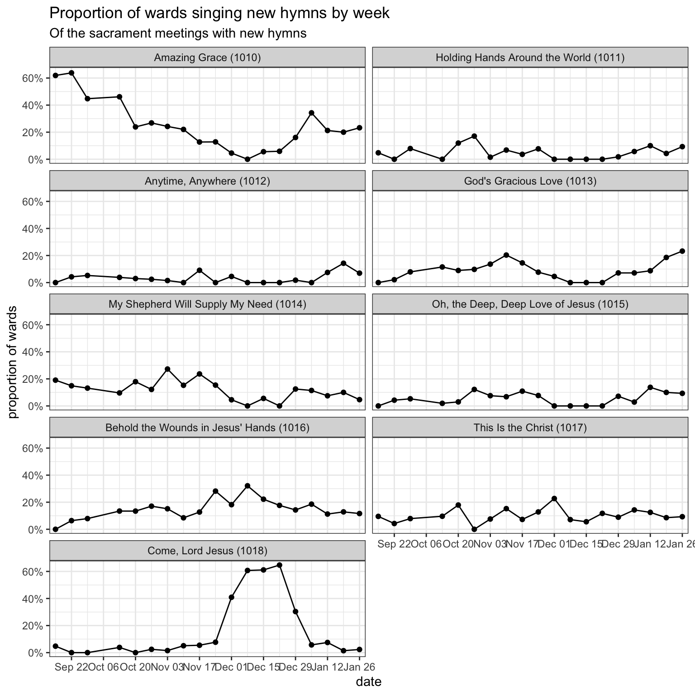

| Number of wards I have data from, by week | |
| Since September 15th | |
| date | wards |
|---|---|
| September 15 | 234 |
| September 22 | 262 |
| September 29 | 239 |
| October 13 | 231 |
| October 20 | 244 |
| October 27 | 216 |
| November 03 | 298 |
| November 10 | 250 |
| November 17 | 253 |
| November 24 | 269 |
| December 01 | 349 |
| December 08 | 663 |
| December 15 | 435 |
| December 22 | 364 |
| December 29 | 635 |
| January 05 | 660 |
| January 12 | 611 |
| January 19 | 623 |
| January 26 | 597 |
| February 02 | 678 |
| February 09 | 615 |
The Second Batch of New Hymns!
general
frequency
new hymns
On September 12th, 2025, the church released the second batch of new hymns. In a previous post, I covered in detail as much as I could about the first batch of hymns and how they rolled out between June 2 and September 8th. This page covers period between when the second batch came out and when the third batch came out on Febrary 13, 2025. Currently I have data from 8,726 sacrament meetings from 1,409 wards from this range.
But first, here’s how much data I have for each week, just so you have an idea of what I’m working with.
How many wards sang new hymns each week?
This plot shows what percentage of wards sing new hymns each week. For context, includes all the data since June 2nd when the first batch came out so we can see how the roll-out of the second batch compares to that of the first batch. I’ve color-coded it by batch: green is for the first batch, red/pink is for the second, and blue is for both combined. This division is only relevant beginning on September 15th when the second batch came out so prior to then, only the blue lines are used. In all cases, a lighter color indicates wards that sang exactly one new hymn while a darker color is for wards that since two or more in a single meeting.

With the first batch of hymns, the reception was very warm. Pretty consistently over the 15 weeks after the first batch of hymns was released, we saw about 30% of wards singing at least one of the new ones, with a small percentage singing two or more.
Since the introduction of the second batch, I thought it’d be helpful to split it up into various colors. The green ones represent the number of wards singing hymns from the first batch (#1001–1009), with the lighter color for just one and the darker color for two in a meeting. The red/pink dots represent the second batch of hymns.
In the first week after the release of the second batch, relatively few wards (around 8%) sang any of them. Meanwhile, the first batch continued as normal. This is about a quarter as many wards as what we saw with the first batch. However, the following Sunday, September 22nd, about 16% of wards sang from the second batch, which is about twice as much as the previous Sunday. This is represented by the pink and red lines going up in the plot. After General Conference and until the holiday season, more wards sang from the second batch than the first batch, which is in stark contrast to the lukewarm reception they initially got.
What is perhaps more interesting though is not which batch people sang from, but whether they sang any new hymns at all. Look at the blue lines. Those represent the number of wards singing new hymns total, across both batches. They went up through September and October. To accompany that, the gray line, which represents the number of wards that sang none of the new hymns, goes down. On October 20th, around 40% of the wards I have data from sang at least one of the new hymns! It stabilized around 30%–40% until through mid-November.
Once we hit the Thanksgiving/Christmas season, there was a dip in the number of new hymns being sung. It started on November 24th when most wards sang hymns of gratitude because of Thanksgiving. (Keep in mind that most of my data comes from the United States. On December 1st, there were even fewer new hymns being sung as people transitioned to singing Christmas hymns. Most notably though, while hymns from the second batch are not sung very much, the first batch was steady. This is because many wards are now singing the new Christmas hymns, particularly,
Since Christmas, the number of wards singing new hymns has returned to its pre-Thanksgiving numbers. However, the second batch never quite got back to where it was in the first two months after it came out.
What hymns are most popular?
The following table shows the hymns from the second batch in order of how popular they are. On the right, I have an approximation of how many wards have sung that hymn since its release.
| Approximate percentage of wards new hymns have been sung in | |
| Since September 15 | |
| Hymn | percent of wards |
|---|---|
| Amazing Grace (1010) | 60.9% |
| Behold the Wounds in Jesus' Hands (1016) | 37.7% |
| My Shepherd Will Supply My Need (1014) | 34.7% |
| God's Gracious Love (1013) | 26.9% |
| This Is the Christ (1017) | 25.2% |
| Come, Lord Jesus (1018) | 21.0% |
| Oh, the Deep, Deep Love of Jesus (1015) | 20.3% |
| Holding Hands Around the World (1011) | 13.7% |
| Anytime, Anywhere (1012) | 11.1% |
So, perhaps unsurprisingly,
(For a complete version of this table that includes all hymns, see here.)
What hymns are most popular each week?
Now that we’re several weeks past the release, we can start to see a glimpse of how the adoption of these new hymns has ebbed and flowed and how each hymn has been introduced. The figure below shows what proportion of wards sang what hymns each week, given that they sang a new hymn that week. So, we’re only focused on wards that have used these hymns.

So,
The rest of the hymns roughly show the same general pattern. They started off with varying degrees of popularity. Over the next two months, they all got slightly more popular—presumably coinciding with the fall of So,
When during meetings are these hymns sung?
We can see when these hymns tend to be sung and get an overall look at the popularity of the second batch of hymns. Again, it’s based on so little data, so take these results with a grain of salt.
| When were new hymns sung in sacrament meeting? | ||||
| Since September 15 | ||||
| New Hymn | Opening | Sacrament | Intermediate | Closing |
|---|---|---|---|---|
| Amazing Grace (1010) |
44%
|
3%
|
20%
|
33%
|
| Holding Hands Around the World (1011) |
44%
|
2%
|
26%
|
28%
|
| Anytime, Anywhere (1012) |
22%
|
0%
|
36%
|
42%
|
| God's Gracious Love (1013) |
29%
|
1%
|
34%
|
37%
|
| My Shepherd Will Supply My Need (1014) |
33%
|
1%
|
27%
|
39%
|
| Oh, the Deep, Deep Love of Jesus (1015) |
29%
|
5%
|
40%
|
27%
|
| Behold the Wounds in Jesus' Hands (1016) |
5%
|
88%
|
4%
|
3%
|
| This Is the Christ (1017) |
30%
|
21%
|
15%
|
34%
|
| Come, Lord Jesus (1018) |
49%
|
3%
|
28%
|
20%
|
| Note: Each row adds up to 100%. | ||||
What I see here is about three different patterns. Most hymns are of the first pattern: they’re typically not sacrament hymns and are roughly equally likely to be sung as opening, intermediate, or closing hymns. There is a little bit of variation among them, for example,
The second type of hymn is the one that was overwhelmingly sung as a sacrament hymn. In this batch
Finally, we have
Conclusion
With this second batch of hymns, there were some pretty interesting patterns. First,
Now that we have a third batch of hymns, I’m curious to see how this one will continue to be incorporated into sacrament meetings.